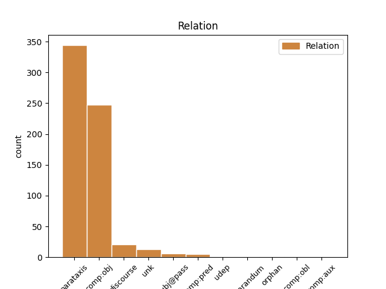
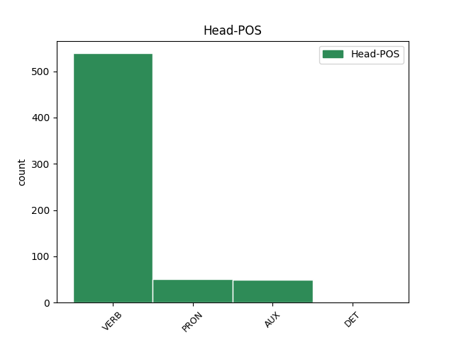
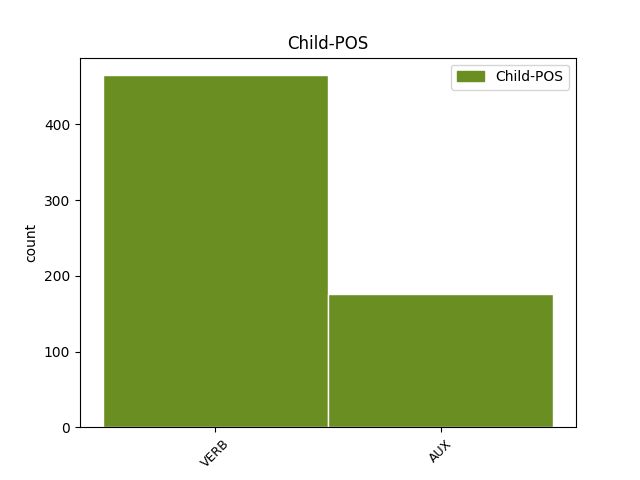

Distribution of features within this leaf



Agreement Rules sorted by frequency.
- When the dependent token is the parataxis(parataxis) of the head token, and the dependent token is VERB.
1 Iespējams _ _ _ _ 0 _ _ _
2 , _ _ _ _ 0 _ _ _
3 ka _ _ _ _ 0 _ _ _
4 pazemība _ _ _ _ 0 _ _ _
5 senajā _ _ _ _ 0 _ _ _
6 Izraēlā _ _ _ _ 0 _ _ _
7 tika _ _ _ _ 0 _ _ _
8 pārņemta _ _ _ _ 0 _ _ _
9 kā _ _ _ _ 0 _ _ _
10 ierēdņu _ _ _ _ 0 _ _ _
11 tikums _ _ _ _ 0 _ _ _
12 no _ _ _ _ 0 _ _ _
13 apkārtējām _ _ _ _ 0 _ _ _
14 kultūrām _ _ _ _ 0 _ _ _
15 , _ _ _ _ 0 _ _ _
16 kas _ _ _ _ 0 _ _ _
17 tika tikt AUX vtnisi130an Evident=Fh|Mood=Ind|Person=3|Polarity=Pos|Tense=Past|VerbForm=Fin|Voice=Act 0 _ _ _
18 piemērota _ _ _ _ 0 _ _ _
19 Jahves _ _ _ _ 0 _ _ _
20 reliģijai _ _ _ _ 0 _ _ _
21 ( _ _ _ _ 0 _ _ _
22 Jahve _ _ _ _ 0 _ _ _
23 ienīst ienīst VERB vmnipt130an Evident=Fh|Mood=Ind|Person=3|Polarity=Pos|Tense=Pres|VerbForm=Fin|Voice=Act 17 parataxis _ LvtbNodeId=a-z99-p160s2w23
24 visus _ _ _ _ 0 _ _ _
25 augstprātīgos _ _ _ _ 0 _ _ _
26 un _ _ _ _ 0 _ _ _
27 lepnos _ _ _ _ 0 _ _ _
28 ) _ _ _ _ 0 _ _ _
29 . _ _ _ _ 0 _ _ _
1 Proti _ _ _ _ 0 _ _ _
2 , _ _ _ _ 0 _ _ _
3 to tas PRON pd3msan Case=Acc|Gender=Masc|Number=Sing|Person=3|PronType=Dem 0 _ _ _
4 , _ _ _ _ 0 _ _ _
5 kas _ _ _ _ 0 _ _ _
6 atbilst atbilst VERB vmnipi130an Evident=Fh|Mood=Ind|Person=3|Polarity=Pos|Tense=Pres|VerbForm=Fin|Voice=Act 3 comp:obj _ LvtbNodeId=a-z89-p104s3w6
7 Mūsu _ _ _ _ 0 _ _ _
8 etniskās _ _ _ _ 0 _ _ _
9 grupas _ _ _ _ 0 _ _ _
10 pasaules _ _ _ _ 0 _ _ _
11 uzskatam _ _ _ _ 0 _ _ _
12 un _ _ _ _ 0 _ _ _
13 ētiskajām _ _ _ _ 0 _ _ _
14 un _ _ _ _ 0 _ _ _
15 estētiskajām _ _ _ _ 0 _ _ _
16 vērtībām _ _ _ _ 0 _ _ _
17 . _ _ _ _ 0 _ _ _
1 Tiešā _ _ _ _ 0 _ _ _
2 vardarbība _ _ _ _ 0 _ _ _
3 labi _ _ _ _ 0 _ _ _
4 atbilst atbilst VERB vmnipi130an Evident=Fh|Mood=Ind|Person=3|Polarity=Pos|Tense=Pres|VerbForm=Fin|Voice=Act 0 _ _ _
5 vispārīgai _ _ _ _ 0 _ _ _
6 vardarbības _ _ _ _ 0 _ _ _
7 definīcijai _ _ _ _ 0 _ _ _
8 ( _ _ _ _ 0 _ _ _
9 labs _ _ _ _ 0 _ _ _
10 piemērs _ _ _ _ 0 _ _ _
11 tam _ _ _ _ 0 _ _ _
12 ir būt AUX vcnipii30an Evident=Fh|Mood=Ind|Person=3|Polarity=Pos|Tense=Pres|VerbForm=Fin|Voice=Act 4 parataxis _ LvtbNodeId=a-z99-p16s2w12
13 Fretheima _ _ _ _ 0 _ _ _
14 definīcija _ _ _ _ 0 _ _ _
15 ) _ _ _ _ 0 _ _ _
16 . _ _ _ _ 0 _ _ _
1 Šāda _ _ _ _ 0 _ _ _
2 pieeja _ _ _ _ 0 _ _ _
3 nesakņojas _ _ _ _ 0 _ _ _
4 tikai _ _ _ _ 0 _ _ _
5 morālas _ _ _ _ 0 _ _ _
6 dabas _ _ _ _ 0 _ _ _
7 apsvērumos _ _ _ _ 0 _ _ _
8 , _ _ _ _ 0 _ _ _
9 bet _ _ _ _ 0 _ _ _
10 ietver _ _ _ _ 0 _ _ _
11 arī _ _ _ _ 0 _ _ _
12 efektivitātes _ _ _ _ 0 _ _ _
13 jautājumus _ _ _ _ 0 _ _ _
14 , _ _ _ _ 0 _ _ _
15 jo _ _ _ _ 0 _ _ _
16 tieši _ _ _ _ 0 _ _ _
17 šīs _ _ _ _ 0 _ _ _
18 sabiedrības _ _ _ _ 0 _ _ _
19 grupas _ _ _ _ 0 _ _ _
20 zinās zināt VERB vmnift330an Evident=Fh|Mood=Ind|Person=3|Polarity=Pos|Tense=Fut|VerbForm=Fin|Voice=Act 0 _ _ _
21 vislabāk _ _ _ _ 0 _ _ _
22 , _ _ _ _ 0 _ _ _
23 kas _ _ _ _ 0 _ _ _
24 tām _ _ _ _ 0 _ _ _
25 ir būt AUX vcnipii30an Evident=Fh|Mood=Ind|Person=3|Polarity=Pos|Tense=Pres|VerbForm=Fin|Voice=Act 20 comp:obj _ LvtbNodeId=a-z107-p138s2w25
26 nepieciešams _ _ _ _ 0 _ _ _
27 nedrošības _ _ _ _ 0 _ _ _
28 mazināšanai _ _ _ _ 0 _ _ _
29 . _ _ _ _ 0 _ _ _
1 Mēs _ _ _ _ 0 _ _ _
2 tur _ _ _ _ 0 _ _ _
3 sēdējām _ _ _ _ 0 _ _ _
4 , _ _ _ _ 0 _ _ _
5 un _ _ _ _ 0 _ _ _
6 viņi _ _ _ _ 0 _ _ _
7 , _ _ _ _ 0 _ _ _
8 šķiet šķist VERB vmnipi130an Evident=Fh|Mood=Ind|Person=3|Polarity=Pos|Tense=Pres|VerbForm=Fin|Voice=Act 10 discourse _ LvtbNodeId=a-s25-p5s21w8|SpaceAfter=No
9 , _ _ _ _ 0 _ _ _
10 sajauca sajaukt VERB vmnist130an Evident=Fh|Mood=Ind|Person=3|Polarity=Pos|Tense=Past|VerbForm=Fin|Voice=Act 0 _ _ _
11 secību _ _ _ _ 0 _ _ _
12 , _ _ _ _ 0 _ _ _
13 jo _ _ _ _ 0 _ _ _
14 mēs _ _ _ _ 0 _ _ _
15 pēcāk _ _ _ _ 0 _ _ _
16 runājām _ _ _ _ 0 _ _ _
17 ar _ _ _ _ 0 _ _ _
18 mazo _ _ _ _ 0 _ _ _
19 puiku _ _ _ _ 0 _ _ _
20 un _ _ _ _ 0 _ _ _
21 vaicājām _ _ _ _ 0 _ _ _
22 : _ _ _ _ 0 _ _ _
23 „ _ _ _ _ 0 _ _ _
24 Vai _ _ _ _ 0 _ _ _
25 viss _ _ _ _ 0 _ _ _
26 bija _ _ _ _ 0 _ _ _
27 kārtībā _ _ _ _ 0 _ _ _
28 ? _ _ _ _ 0 _ _ _
29 ” _ _ _ _ 0 _ _ _
1 O. _ _ _ _ 0 _ _ _
2 Dankers _ _ _ _ 0 _ _ _
3 ir _ _ _ _ 0 _ _ _
4 uzrakstījis _ _ _ _ 0 _ _ _
5 grāmatu _ _ _ _ 0 _ _ _
6 , _ _ _ _ 0 _ _ _
7 kas _ _ _ _ 0 _ _ _
8 saucas saukties VERB vmyipi130an Evident=Fh|Mood=Ind|Person=3|Polarity=Pos|Reflex=Yes|Tense=Pres|VerbForm=Fin|Voice=Act 0 _ _ _
9 Lai _ _ _ _ 0 _ _ _
10 vēsture _ _ _ _ 0 _ _ _
11 spriež spriest VERB vmnipt130an Evident=Fh|Mood=Ind|Person=3|Polarity=Pos|Tense=Pres|VerbForm=Fin|Voice=Act 8 unk _ LvtbNodeId=a-z88-p34s2w12
12 tiesu _ _ _ _ 0 _ _ _
13 ( _ _ _ _ 0 _ _ _
14 Toronto _ _ _ _ 0 _ _ _
15 , _ _ _ _ 0 _ _ _
16 1965 _ _ _ _ 0 _ _ _
17 ) _ _ _ _ 0 _ _ _
18 . _ _ _ _ 0 _ _ _
1 Ja _ _ _ _ 0 _ _ _
2 par _ _ _ _ 0 _ _ _
3 to _ _ _ _ 0 _ _ _
4 ģimenē _ _ _ _ 0 _ _ _
5 tiek tikt AUX vtnipi130an Evident=Fh|Mood=Ind|Person=3|Polarity=Pos|Tense=Pres|VerbForm=Fin|Voice=Act 0 _ _ _
6 runāts _ _ _ _ 0 _ _ _
7 , _ _ _ _ 0 _ _ _
8 izskaidrots _ _ _ _ 0 _ _ _
9 , _ _ _ _ 0 _ _ _
10 ko _ _ _ _ 0 _ _ _
11 ar _ _ _ _ 0 _ _ _
12 cilvēku _ _ _ _ 0 _ _ _
13 dara darīt VERB vmnipt330an Evident=Fh|Mood=Ind|Person=3|Polarity=Pos|Tense=Pres|VerbForm=Fin|Voice=Act 5 subj@pass _ LvtbNodeId=a-p680-p14s4w13
14 alkohols _ _ _ _ 0 _ _ _
15 , _ _ _ _ 0 _ _ _
16 narkotikas _ _ _ _ 0 _ _ _
17 , _ _ _ _ 0 _ _ _
18 kādas _ _ _ _ 0 _ _ _
19 sekas _ _ _ _ 0 _ _ _
20 var _ _ _ _ 0 _ _ _
21 būt _ _ _ _ 0 _ _ _
22 , _ _ _ _ 0 _ _ _
23 ja _ _ _ _ 0 _ _ _
24 saruna _ _ _ _ 0 _ _ _
25 ir _ _ _ _ 0 _ _ _
26 nevis _ _ _ _ 0 _ _ _
27 pamācoša _ _ _ _ 0 _ _ _
28 vai _ _ _ _ 0 _ _ _
29 norādoša _ _ _ _ 0 _ _ _
30 , _ _ _ _ 0 _ _ _
31 bet _ _ _ _ 0 _ _ _
32 gan _ _ _ _ 0 _ _ _
33 sadraudzībā _ _ _ _ 0 _ _ _
34 teikta _ _ _ _ 0 _ _ _
35 , _ _ _ _ 0 _ _ _
36 tad _ _ _ _ 0 _ _ _
37 jaunietis _ _ _ _ 0 _ _ _
38 arī _ _ _ _ 0 _ _ _
39 var _ _ _ _ 0 _ _ _
40 izmēģināt _ _ _ _ 0 _ _ _
41 un _ _ _ _ 0 _ _ _
42 pēc _ _ _ _ 0 _ _ _
43 tam _ _ _ _ 0 _ _ _
44 atzīties _ _ _ _ 0 _ _ _
45 vecākiem _ _ _ _ 0 _ _ _
46 , _ _ _ _ 0 _ _ _
47 ka _ _ _ _ 0 _ _ _
48 tas _ _ _ _ 0 _ _ _
49 viņam _ _ _ _ 0 _ _ _
50 nav _ _ _ _ 0 _ _ _
51 bijis _ _ _ _ 0 _ _ _
52 vajadzīgs _ _ _ _ 0 _ _ _
53 . _ _ _ _ 0 _ _ _
1 Kā _ _ _ _ 0 _ _ _
2 par _ _ _ _ 0 _ _ _
3 cilvēku _ _ _ _ 0 _ _ _
4 un _ _ _ _ 0 _ _ _
5 politiķi _ _ _ _ 0 _ _ _
6 par _ _ _ _ 0 _ _ _
7 Raimondu _ _ _ _ 0 _ _ _
8 Vējoni _ _ _ _ 0 _ _ _
9 var varēt VERB vonipi330an Evident=Fh|Mood=Ind|Person=3|Polarity=Pos|Tense=Pres|VerbForm=Fin|Voice=Act 0 _ _ _
10 bilst bilst VERB vmnipt130an Evident=Fh|Mood=Ind|Person=3|Polarity=Pos|Tense=Pres|VerbForm=Fin|Voice=Act 9 comp:pred _ LvtbNodeId=a-s86-p3s1w10|SpaceAfter=No
11 , _ _ _ _ 0 _ _ _
12 ka _ _ _ _ 0 _ _ _
13 viņš _ _ _ _ 0 _ _ _
14 ir _ _ _ _ 0 _ _ _
15 politiski _ _ _ _ 0 _ _ _
16 nobriedis _ _ _ _ 0 _ _ _
17 . _ _ _ _ 0 _ _ _
1 Tāpat _ _ _ _ 0 _ _ _
2 nav būt AUX vcnipii30ay Evident=Fh|Mood=Ind|Person=3|Polarity=Neg|Tense=Pres|VerbForm=Fin|Voice=Act 0 _ _ _
3 noteikts _ _ _ _ 0 _ _ _
4 , _ _ _ _ 0 _ _ _
5 kas _ _ _ _ 0 _ _ _
6 tad _ _ _ _ 0 _ _ _
7 ir būt AUX vcnipii30an Evident=Fh|Mood=Ind|Person=3|Polarity=Pos|Tense=Pres|VerbForm=Fin|Voice=Act 2 subj@pass _ LvtbNodeId=a-p15639-p3s1w7
8 enerģētiskais _ _ _ _ 0 _ _ _
9 dzēriens _ _ _ _ 0 _ _ _
10 , _ _ _ _ 0 _ _ _
11 kā _ _ _ _ 0 _ _ _
12 atšķirt _ _ _ _ 0 _ _ _
13 aizliegtos _ _ _ _ 0 _ _ _
14 dzērienus _ _ _ _ 0 _ _ _
15 no _ _ _ _ 0 _ _ _
16 dzērieniem _ _ _ _ 0 _ _ _
17 , _ _ _ _ 0 _ _ _
18 kam _ _ _ _ 0 _ _ _
19 ir _ _ _ _ 0 _ _ _
20 zemāka _ _ _ _ 0 _ _ _
21 aktīvo _ _ _ _ 0 _ _ _
22 vielu _ _ _ _ 0 _ _ _
23 koncentrācija _ _ _ _ 0 _ _ _
24 un _ _ _ _ 0 _ _ _
25 kas _ _ _ _ 0 _ _ _
26 nav _ _ _ _ 0 _ _ _
27 jānovieto _ _ _ _ 0 _ _ _
28 un _ _ _ _ 0 _ _ _
29 jāmarķē _ _ _ _ 0 _ _ _
30 atsevišķi _ _ _ _ 0 _ _ _
31 . _ _ _ _ 0 _ _ _
1 Latvijas _ _ _ _ 0 _ _ _
2 pludmales _ _ _ _ 0 _ _ _
3 volejbolists _ _ _ _ 0 _ _ _
4 Aleksandrs _ _ _ _ 0 _ _ _
5 Samoilovs _ _ _ _ 0 _ _ _
6 apzinās apzināties VERB vmyipt330an Evident=Fh|Mood=Ind|Person=3|Polarity=Pos|Reflex=Yes|Tense=Pres|VerbForm=Fin|Voice=Act 34 comp:obl _ LvtbNodeId=a-p14757-p1s2w6|SpaceAfter=No
7 , _ _ _ _ 0 _ _ _
8 ka _ _ _ _ 0 _ _ _
9 no _ _ _ _ 0 _ _ _
10 viņa _ _ _ _ 0 _ _ _
11 un _ _ _ _ 0 _ _ _
12 Jāņa _ _ _ _ 0 _ _ _
13 Šmēdiņa _ _ _ _ 0 _ _ _
14 pašmāju _ _ _ _ 0 _ _ _
15 līdzjutēji _ _ _ _ 0 _ _ _
16 gaida _ _ _ _ 0 _ _ _
17 tikai _ _ _ _ 0 _ _ _
18 uzvaras _ _ _ _ 0 _ _ _
19 , _ _ _ _ 0 _ _ _
20 jo _ _ _ _ 0 _ _ _
21 pie _ _ _ _ 0 _ _ _
22 tām _ _ _ _ 0 _ _ _
23 sportisti _ _ _ _ 0 _ _ _
24 sabiedrību _ _ _ _ 0 _ _ _
25 ir _ _ _ _ 0 _ _ _
26 pieradinājuši _ _ _ _ 0 _ _ _
27 , _ _ _ _ 0 _ _ _
28 pēc _ _ _ _ 0 _ _ _
29 Eiropas _ _ _ _ 0 _ _ _
30 čempionāta _ _ _ _ 0 _ _ _
31 sudraba _ _ _ _ 0 _ _ _
32 medaļu _ _ _ _ 0 _ _ _
33 izcīnīšanas _ _ _ _ 0 _ _ _
34 izteicās izteikties VERB vmyisi130an Evident=Fh|Mood=Ind|Person=3|Polarity=Pos|Reflex=Yes|Tense=Past|VerbForm=Fin|Voice=Act 0 _ _ _
35 Samoilovs _ _ _ _ 0 _ _ _
36 . _ _ _ _ 0 _ _ _
1 11. _ _ _ _ 0 _ _ _
2 februārī _ _ _ _ 0 _ _ _
3 LTV1 _ _ _ _ 0 _ _ _
4 raidījumā _ _ _ _ 0 _ _ _
5 " _ _ _ _ 0 _ _ _
6 Viss _ _ _ _ 0 _ _ _
7 notiek notikt VERB vmnipi130an Evident=Fh|Mood=Ind|Person=3|Polarity=Pos|Tense=Pres|VerbForm=Fin|Voice=Act 14 udep _ LvtbNodeId=a-p3746-p2s1w7|SpaceAfter=No
8 " _ _ _ _ 0 _ _ _
9 rubrikā _ _ _ _ 0 _ _ _
10 " _ _ _ _ 0 _ _ _
11 Ideju _ _ _ _ 0 _ _ _
12 mežs _ _ _ _ 0 _ _ _
13 " _ _ _ _ 0 _ _ _
14 varēs varēt VERB vonifi330an Evident=Fh|Mood=Ind|Person=3|Polarity=Pos|Tense=Fut|VerbForm=Fin|Voice=Act 0 _ _ _
15 noskatīties _ _ _ _ 0 _ _ _
16 sižetu _ _ _ _ 0 _ _ _
17 par _ _ _ _ 0 _ _ _
18 SIA _ _ _ _ 0 _ _ _
19 " _ _ _ _ 0 _ _ _
20 Zemgales _ _ _ _ 0 _ _ _
21 tehnoloģisko _ _ _ _ 0 _ _ _
22 centru _ _ _ _ 0 _ _ _
23 " _ _ _ _ 0 _ _ _
24 ( _ _ _ _ 0 _ _ _
25 ZTC _ _ _ _ 0 _ _ _
26 ) _ _ _ _ 0 _ _ _
27 , _ _ _ _ 0 _ _ _
28 informē _ _ _ _ 0 _ _ _
29 " _ _ _ _ 0 _ _ _
30 Dienas _ _ _ _ 0 _ _ _
31 Bizness _ _ _ _ 0 _ _ _
32 " _ _ _ _ 0 _ _ _
33 . _ _ _ _ 0 _ _ _
1 Tā _ _ _ _ 0 _ _ _
2 ir būt AUX vcnipii30an Evident=Fh|Mood=Ind|Person=3|Polarity=Pos|Tense=Pres|VerbForm=Fin|Voice=Act 0 _ _ _
3 filma _ _ _ _ 0 _ _ _
4 ir būt AUX vcnipii30an Evident=Fh|Mood=Ind|Person=3|Polarity=Pos|Tense=Pres|VerbForm=Fin|Voice=Act 2 reparandum _ LvtbNodeId=a-p3761-p5s4w4
5 ar _ _ _ _ 0 _ _ _
6 apzinātiem _ _ _ _ 0 _ _ _
7 un _ _ _ _ 0 _ _ _
8 neapzinātiem _ _ _ _ 0 _ _ _
9 komiskiem _ _ _ _ 0 _ _ _
10 elementiem _ _ _ _ 0 _ _ _
11 – _ _ _ _ 0 _ _ _
12 īsts _ _ _ _ 0 _ _ _
13 « _ _ _ _ 0 _ _ _
14 ceļabiedru _ _ _ _ 0 _ _ _
15 dēku _ _ _ _ 0 _ _ _
16 stāsts _ _ _ _ 0 _ _ _
17 » _ _ _ _ 0 _ _ _
18 jeb _ _ _ _ 0 _ _ _
19 , _ _ _ _ 0 _ _ _
20 kā _ _ _ _ 0 _ _ _
21 Holivudā _ _ _ _ 0 _ _ _
22 šādu _ _ _ _ 0 _ _ _
23 žanru _ _ _ _ 0 _ _ _
24 sauc _ _ _ _ 0 _ _ _
25 , _ _ _ _ 0 _ _ _
26 – _ _ _ _ 0 _ _ _
27 road _ _ _ _ 0 _ _ _
28 movie _ _ _ _ 0 _ _ _
29 . _ _ _ _ 0 _ _ _
Disagree Examples:
1 Jums _ _ _ _ 0 _ _ _
2 nav _ _ _ _ 0 _ _ _
3 sveša _ _ _ _ 0 _ _ _
4 vilšanās _ _ _ _ 0 _ _ _
5 , _ _ _ _ 0 _ _ _
6 taču _ _ _ _ 0 _ _ _
7 spējat spēt VERB vonipi12pan Evident=Fh|Mood=Ind|Number=Plur|Person=2|Polarity=Pos|Tense=Pres|VerbForm=Fin|Voice=Act 0 _ _ _
8 par _ _ _ _ 0 _ _ _
9 to _ _ _ _ 0 _ _ _
10 ātri _ _ _ _ 0 _ _ _
11 aizmirst aizmirst VERB vmnipt130an Evident=Fh|Mood=Ind|Person=3|Polarity=Pos|Tense=Pres|VerbForm=Fin|Voice=Act 7 comp:pred _ LvtbNodeId=a-c23-p13s8w11|SpaceAfter=No
12 . _ _ _ _ 0 _ _ _
1 Tāpēc _ _ _ _ 0 _ _ _
2 sēdāmies _ _ _ _ 0 _ _ _
3 ar _ _ _ _ 0 _ _ _
4 sievu _ _ _ _ 0 _ _ _
5 pie _ _ _ _ 0 _ _ _
6 galda _ _ _ _ 0 _ _ _
7 , _ _ _ _ 0 _ _ _
8 paņēmām _ _ _ _ 0 _ _ _
9 divas _ _ _ _ 0 _ _ _
10 baltas _ _ _ _ 0 _ _ _
11 papīra _ _ _ _ 0 _ _ _
12 lapas _ _ _ _ 0 _ _ _
13 , _ _ _ _ 0 _ _ _
14 pārdalījām _ _ _ _ 0 _ _ _
15 katru _ _ _ _ 0 _ _ _
16 uz _ _ _ _ 0 _ _ _
17 pusēm _ _ _ _ 0 _ _ _
18 , _ _ _ _ 0 _ _ _
19 lai _ _ _ _ 0 _ _ _
20 vienā _ _ _ _ 0 _ _ _
21 var _ _ _ _ 0 _ _ _
22 rakstīt _ _ _ _ 0 _ _ _
23 to tas PRON pd3msan Case=Acc|Gender=Masc|Number=Sing|Person=3|PronType=Dem 0 _ _ _
24 , _ _ _ _ 0 _ _ _
25 ko _ _ _ _ 0 _ _ _
26 gribam gribēt VERB vmnipt31pan Evident=Fh|Mood=Ind|Number=Plur|Person=1|Polarity=Pos|Tense=Pres|VerbForm=Fin|Voice=Act 23 comp:obj _ LvtbNodeId=a-c33-p25s3w26|SpaceAfter=No
27 , _ _ _ _ 0 _ _ _
28 bet _ _ _ _ 0 _ _ _
29 otrā _ _ _ _ 0 _ _ _
30 – _ _ _ _ 0 _ _ _
31 ko _ _ _ _ 0 _ _ _
32 kategoriski _ _ _ _ 0 _ _ _
33 negribam _ _ _ _ 0 _ _ _
34 . _ _ _ _ 0 _ _ _
1 Bet _ _ _ _ 0 _ _ _
2 tad _ _ _ _ 0 _ _ _
3 domāju domāt VERB vmnist21san Evident=Fh|Mood=Ind|Number=Sing|Person=1|Polarity=Pos|Tense=Past|VerbForm=Fin|Voice=Act 0 _ _ _
4 , _ _ _ _ 0 _ _ _
5 kādēļ _ _ _ _ 0 _ _ _
6 tad _ _ _ _ 0 _ _ _
7 ir būt VERB vmnipii30an Evident=Fh|Mood=Ind|Person=3|Polarity=Pos|Tense=Pres|VerbForm=Fin|Voice=Act 3 comp:obj _ LvtbNodeId=a-c41-p19s4w7
8 zinātnieki _ _ _ _ 0 _ _ _
9 ? _ _ _ _ 0 _ _ _
1 Kad _ _ _ _ 0 _ _ _
2 biju _ _ _ _ 0 _ _ _
3 mazāka _ _ _ _ 0 _ _ _
4 , _ _ _ _ 0 _ _ _
5 ierāpos _ _ _ _ 0 _ _ _
6 viņiem _ _ _ _ 0 _ _ _
7 klēpī _ _ _ _ 0 _ _ _
8 un _ _ _ _ 0 _ _ _
9 bažīgi _ _ _ _ 0 _ _ _
10 jautāju jautāt VERB vmnist21san Evident=Fh|Mood=Ind|Number=Sing|Person=1|Polarity=Pos|Tense=Past|VerbForm=Fin|Voice=Act 0 _ _ _
11 — _ _ _ _ 0 _ _ _
12 vai _ _ _ _ 0 _ _ _
13 tu _ _ _ _ 0 _ _ _
14 vēl _ _ _ _ 0 _ _ _
15 ilgi _ _ _ _ 0 _ _ _
16 dzīvosi dzīvot VERB vmnift22san Evident=Fh|Mood=Ind|Number=Sing|Person=2|Polarity=Pos|Tense=Fut|VerbForm=Fin|Voice=Act 10 parataxis _ LvtbNodeId=a-c47-p3s4w16|SpaceAfter=No
17 ? _ _ _ _ 0 _ _ _
1 Iedomājies iedomāties VERB vmym0t22san Mood=Imp|Number=Sing|Person=2|Polarity=Pos|Reflex=Yes|VerbForm=Fin|Voice=Act 0 _ _ _
2 , _ _ _ _ 0 _ _ _
3 viņš _ _ _ _ 0 _ _ _
4 pat _ _ _ _ 0 _ _ _
5 peldēt _ _ _ _ 0 _ _ _
6 nemāk mācēt VERB vonipi330ay Evident=Fh|Mood=Ind|Person=3|Polarity=Neg|Tense=Pres|VerbForm=Fin|Voice=Act 1 comp:obj _ LvtbNodeId=a-d1-p355s3w6|SpaceAfter=No
7 . _ _ _ _ 0 _ _ _